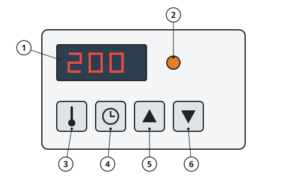

Control panel
The names and functions of the buttons and indicators on the control panel.

| No. | Name | Function |
|---|---|---|
| 1 | Display | Shows the settings. Shows an error code when a problem occurs. |
| 2 | Heating lamp | Lights up while the heater wire is heating. |
| 3 | Temperature button | Press to set the sealing temperature. |
| 4 | Time button | Press to set the heating time and the cooling time. |
| 5 | Up button | Increases the setting. |
| 6 | Down button | Decreases the setting. |